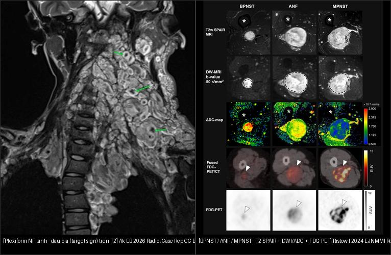
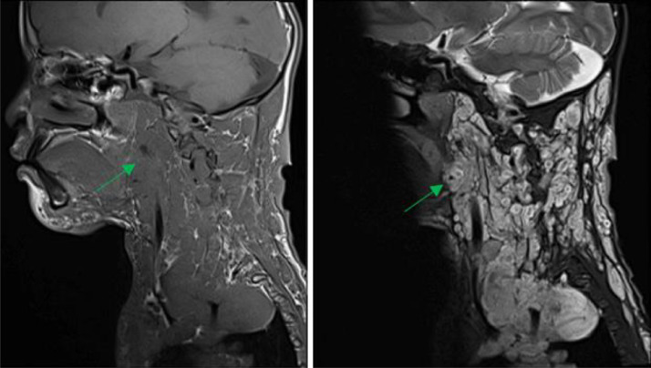
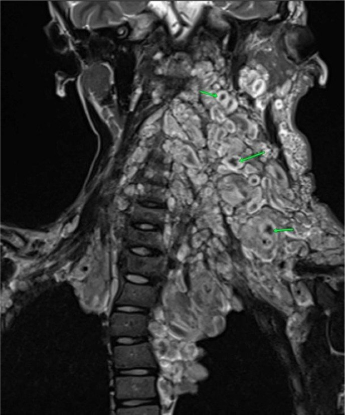
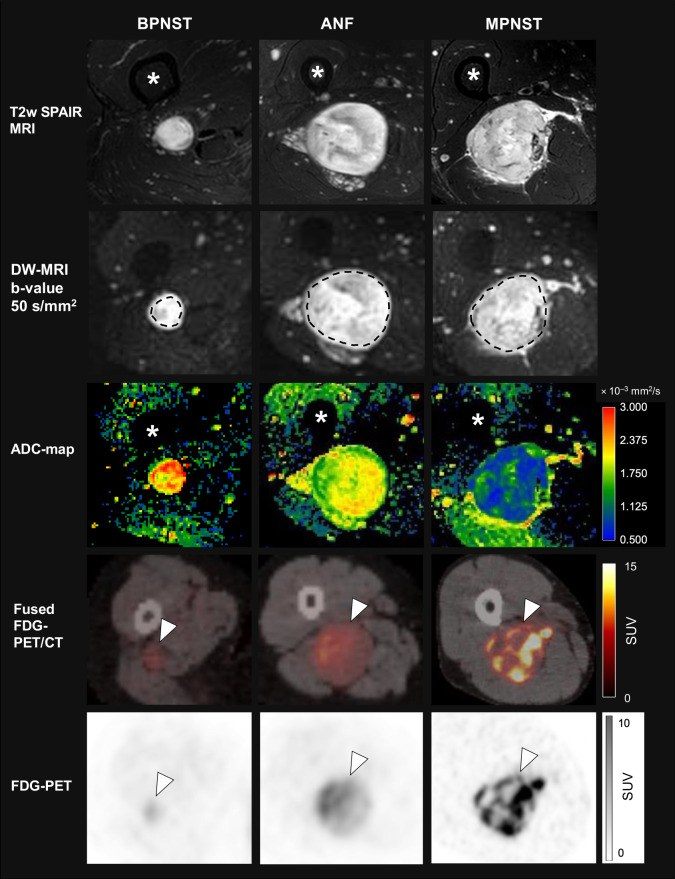
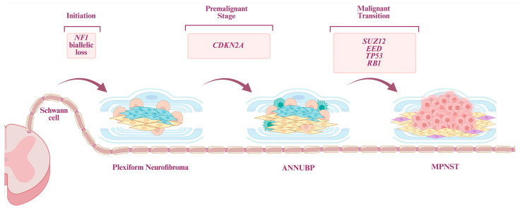
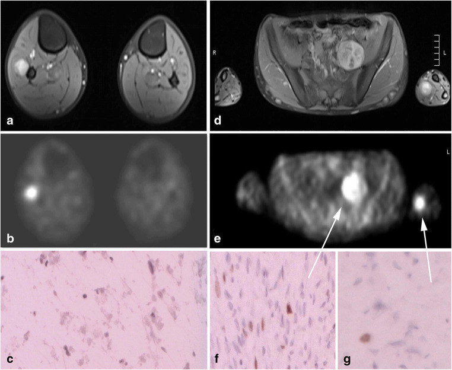
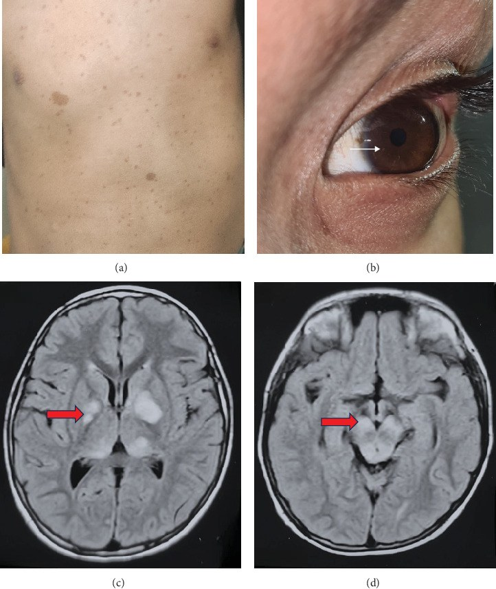
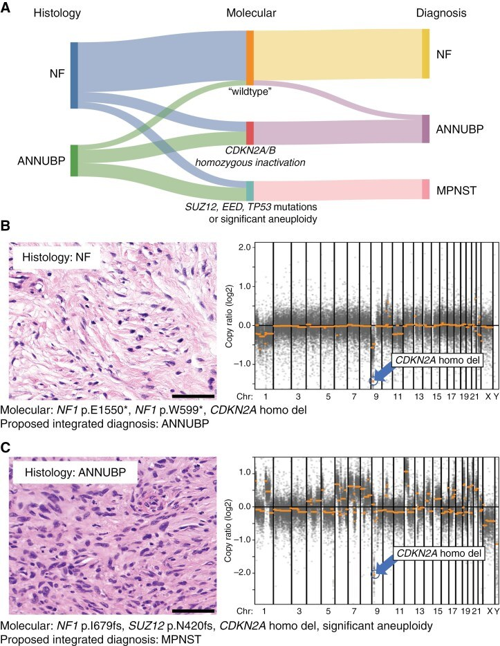

377 — U bao dây thần kinh dạng đám rối (plexiform neurofibroma) & chuyển dạng MPNST ở NF1 / Plexiform neurofibroma & malignant transformation in NF1
Tags: pattern:u-than-kinh-ngoai-vi pattern:u-phan-mem pattern:dam-roi-than-kinh vung:mo-mem score:ADC score:SUVmax protocol:MRI-mo-mem protocol:WB-MRI protocol:PET-CT
Mức chắc chắn (certainty): tổng hợp y văn (literature synthesis) — tổng hợp từ consensus mô bệnh học/hình ảnh + nghiên cứu so sánh PET/CT–DWI + ca nguyên văn CC BY; phần ca quiz là ca nguyên văn của bài gốc.
1. Tổng quan bệnh học – cơ chế hình ảnh
1.1 NF1 và con đường tiến triển PN → ANNUBP → MPNST
- Neurofibromatosis type 1 (NF1) là bệnh di truyền trội nhiễm sắc thể thường, do đột biến gen NF1 (neurofibromin, đường truyền RAS). Chẩn đoán lâm sàng theo tiêu chuẩn 2021: ≥ 2 trong 7 tiêu chí (≥ 6 đốm café-au-lait; tàn nhang vùng nếp gấp; ≥ 2 u thần kinh hoặc 1 u dạng đám rối (plexiform); u thần kinh thị; ≥ 2 nốt Lisch; loạn sản xương; người thân bậc 1 mắc NF1).
- U dạng đám rối (plexiform neurofibroma — PN) là u bao dây thần kinh lành, phát triển mất tổ chức của toàn bộ thành phần dây thần kinh, gần như chỉ gặp ở NF1, ~50% bệnh nhân NF1 có PN; có từ lúc sinh và lớn dần. Vì bản chất xâm nhập dọc dây thần kinh, PN hay bao bọc mạch–thần kinh và gây chèn ép.
- Con đường phân tử tiến triển (stepwise): mất cả hai alen NF1 ở dòng tế bào Schwann → PN → mất CDKN2A/B (thường là bất thường sớm nhất, xuất hiện ở ANNUBP) → mất SUZ12/EED (phức hợp PRC2) kèm mất H3K27me3 → MPNST. Vì vậy hình ảnh "u to lên + nốt mới trong u cũ" phản ánh một dòng tế bào đã tích lũy thêm đột biến.
- Nguy cơ & tiên lượng: nguy cơ MPNST suốt đời 8–15% ở NF1; MPNST là nguyên nhân tử vong hàng đầu (giảm tuổi thọ 8–15 năm). U thần kinh dạng da (cutaneous) hầu như không chuyển dạng — chỉ PN/NF ngoài da mới chuyển.
1.2 TẠI SAO hình ảnh phản ánh đúng bản chất mô
- Dấu "bia bắn" (target sign) trên T2 — u lành: lõi trung tâm xơ (fibrous core) tín hiệu THẤP + viền ngoại vi myxoid tín hiệu CAO → hình bia. PN thường có nhiều dấu bia. Sự hiện diện target sign giúp phân biệt u thần kinh lành với MPNST (MPNST mất cấu trúc đều đặn này).
- Dấu "tách mỡ" (split-fat sign) và dấu "đuôi" (tail sign): u nằm dọc dây thần kinh, tách lớp mỡ → gợi ý gốc thần kinh.
- ADC thấp ở MPNST — TẠI SAO: MPNST giàu tế bào (hypercellular) → khoảng ngoại bào chật → khuếch tán bị hạn chế → ADC giảm. Trên DWI, ADC trung bình giảm dần theo mức ác tính: BPNST 2,13 → ANF 1,66 → MPNST 1,37 (× 10⁻³ mm²/s).
- FDG-PET dương ở MPNST — TẠI SAO: tế bào ác tính tăng chuyển hóa glucose → SUVmax tăng. Lưu ý chồng lấp SUVmax giữa MPNST và tổn thương lành/viêm → PET không tự quyết định, phải kết hợp MRI + mô bệnh.
- Định lượng hiệu năng: phân biệt BPNST vs (ANF + MPNST) — AUC SUVmax 94,0%; AUC ADCmean/min/dark 91,6% / 90,1% / 92,5%. Ngưỡng tham chiếu: SUVmax ≥ 3,5 → Se 0,99 / Sp 0,75 (BPNST vs MPNST); ngưỡng 5 cho ANF+MPNST → Se 85,2% / Sp 92,3%; ADCmin ≤ 1,0 × 10⁻³ mm²/s và ADCdark ≤ 1,54 × 10⁻³ mm²/s gợi ý ác.
1.3 Tiêu chuẩn mô bệnh ANNUBP & MPNST (2017, codified WHO 2021/2022)
- ANNUBP (atypical neurofibromatous neoplasm of uncertain biologic potential): u bao dây thần kinh có ≥ 2 trong 4 đặc điểm: (a) dị dạng tế bào (cytologic atypia), (b) mất cấu trúc u thần kinh, (c) tăng mật độ tế bào (hypercellularity), (d) chỉ số phân bào > 1/50 HPF và < 3/10 HPF — có hoặc không kèm mất CDKN2A/B.
- MPNST độ thấp (low-grade): đặc điểm ANNUBP nhưng chỉ số phân bào 3–9/10 HPF và KHÔNG hoại tử.
- MPNST độ cao (high-grade): ≥ 10 phân bào/10 HPF, hoặc 3–9/10 HPF kèm hoại tử.
- Đề xuất 2024: gọi "low-grade MPNST" → "ANNUBP với tăng sinh" để tránh dùng chữ "ác tính" cho nhóm tiên lượng còn chưa rõ.
2. Mẫu hình + chẩn đoán phân biệt theo vị trí (gamut)
- Mẫu hình gốc: khối mô mềm dọc theo dây thần kinh (chi/thân/đám rối) ở bệnh nhân có NF1. Hỏi 4 câu: (1) có dấu bia/split-fat/tail không? (2) có nốt mới trong u cũ không? (3) ADC có thấp không? (4) SUVmax bao nhiêu?
- Gamut theo bản chất:
- Lành: u thần kinh dạng da (cutaneous NF), PN (đám rối), u thần kinh dây (neurofibroma), schwannoma (thường NF2/schwannomatosis, đơn độc).
- Trung gian (tiền ác): ANNUBP.
- Ác: MPNST độ thấp/độ cao (thường mọc trong PN sẵn có, không mọc từ u dạng da).
- Dấu hiệu nghi ác trên hình ảnh (worrisome): kích thước lớn, tín hiệu T1 không đồng nhất, ngấm thuốc ngoại vi, thoái hóa nang, vùng phù quanh u (edema-like zone), nốt mới trong u cũ, phát triển nhanh, đau mới/tăng. Trên lâm sàng: "nốt phát triển nhanh/đau, thay đổi độ chắc, thiếu hụt thần kinh mới" là dấu hiệu cảnh báo.
3. Bảng so sánh phân biệt (ma trận đối chiếu)
| Thực thể (entity) | Hình ảnh điển hình | Chốt vào (rule-in) | Chốt loại (rule-out) | Gợi ý xác nhận |
|---|---|---|---|---|
| U thần kinh dạng đám rối (PN) lành | Khối dọc dây thần kinh, nhiều dấu bia trên T2, split-fat sign, tail sign; ngấm thuốc lan tỏa; bao bọc mạch–thần kinh | Nhiều target sign + tín hiệu đồng nhất + bệnh cảnh NF1 lâu năm | Nốt mới/không đồng nhất/vùng phù quanh u → không đơn thuần lành | MRI T1 + T2 fat-sat + DWI/ADC; so phim cũ |
| ANNUBP | Trong u cũ: nốt mới, tín hiệu kém đồng nhất hơn, có thể ADC giảm nhẹ; chưa có hoại tử lan rộng | Nốt mới trong u cũ + mất cấu trúc đều (không dựa vào một thông số đơn) | U đồng nhất, ADC cao, không nốt mới → nghĩ lành | Sinh thiết/định vị + mô bệnh (≥ 2/4 tiêu chí) ± CDKN2A/B |
| MPNST độ cao | Khối lớn, tín hiệu T1 không đồng nhất, ngấm ngoại vi, thoái hóa nang, vùng phù quanh u, mất dấu bia; ADC thấp, SUVmax cao | ADC thấp (ADCmin ≤ 1,0; ADCmean ~1,37) + SUVmax cao (≥ 3,5–5) + không đồng nhất/phù quanh u | Target sign rõ + ADC cao + SUVmax thấp → ít nghĩ MPNST (nhưng không loại trừ tuyệt đối) | PET/CT hoặc PET/MRI + sinh thiết/mô bệnh (phân bào/hoại tử) |
| Schwannoma | Bờ rõ, có thể có target sign, thoái hóa nang/đốm xuất huyết, gắn vào một dây thần kinh; thường NF2/schwannomatosis | Bờ rõ + lệch dây thần kinh (không đan xen) | Đan xen toàn bộ dây + NF1 + nhiều tổn thương → nghĩ neurofibroma/PN | MRI; bệnh cảnh (NF1 vs NF2/schwannomatosis) |
| U thần kinh dạng da (cutaneous NF) | Nốt ở da/dưới da, nhỏ, đồng nhất, không xâm nhập dây lớn | Nốt nhỏ ở da + không dọc dây lớn | Xâm nhập dây lớn/đám rối → nghĩ PN | Lâm sàng + siêu âm/MRI nông |

*Trái: PN lành — dấu bia (target sign) trên T2 (mũi tên xanh). Phải: BPNST / ANF / MPNST — hàng T2 SPAIR (giải phẫu), hàng DWI b=50, hàng bản đồ ADC, hàng PET/CT hợp nhất và FDG-PET; từ trái sang phải tổn thương ngày càng giàu tế bào (ADC giảm) và tăng chuyển hóa (FDG tăng). Nguồn: Ak EB 2026, Radiol Case Rep (PMC12853764); Ristow I 2024, EJNMMI Res (PMC11680535) — CC BY 4.0. Ảnh ghép letterbox.*Nhìn gì trước để không bỏ sót chuyển dạng?
- So phim cũ: một nốt mới trong u cũ hoặc u to nhanh quan trọng hơn kích thước tuyệt đối.
- Không đồng nhất + phù quanh u + mất dấu bia → nghi ác.
- Định lượng: ADC thấp và/hoặc SUVmax cao củng cố nghi ác, nhưng chỉ mô bệnh mới chốt.
4. Protocol chụp + hệ phân độ/điểm + lưu đồ
- MRI vùng tổn thương (regional MRI): T1W, T2W fat-sat, DWI + bản đồ ADC, T1W sau tiêm — đánh giá kích thước, đồng nhất, dấu bia, phù quanh u, bao bọc mạch–thần kinh.
- WB-MRI (whole-body MRI): khuyến nghị tại thời điểm chuyển tiếp sang người lớn (healthcare transition) để xác lập "gánh nặng u nội bộ" (internal tumour burden) — yếu tố dự báo nguy cơ MPNST. Trẻ em cần cân nhắc ALARA (không chụp lặp vô ích).
- FDG-PET/CT hoặc PET/MRI: khi MRI nghi ngờ hoặc có dấu lâm sàng cảnh báo; dùng SUVmax (tham chiếu ngưỡng 3,5 cho BPNST vs MPNST; 5 cho ANF+MPNST).
- Nguy cơ cao MPNST nếu ≥ 1 tiêu chí: tiền sử ANNUBP; gánh nặng u nội bộ cao; PN lớn/nhiều; tiền sử xạ trị; người thân NF1 + MPNST; NF1 vi mất đoạn (gồm SUZ12) hoặc đột biến missense codon 844–848.
- Xác nhận: sinh thiết/định vị có hướng + mô bệnh theo tiêu chuẩn ANNUBP/MPNST + hồ sơ phân tử (CDKN2A/B, H3K27me3).
- Không có RADS riêng cho NF1 → dùng lưu đồ quyết định dưới đây.
flowchart TD
A[NF1 + khoi mo mem doc day than kinh] --> B{MRI: co dau hieu nghi ac?}
B -->|Khong - nhieu target sign, dong nhat| C[Theo doi dinh ky + so phim cu]
B -->|Co - not moi, khong dong nhat, phu quanh u, to nhanh| D[DWI/ADC + FDG-PET/CT]
D --> E{ADC thap va/hoac SUVmax cao?}
E -->|Khong| C
E -->|Co| F{Sinh thiet duoc?}
F -->|Co| G[Sinh thiet/dinh vi + mo benh ANNUBP vs MPNST]
F -->|Khong an toan| H[PET/MRI theo doi + hoi chan da chuyen khoa]
G --> I{Ket qua}
I -->|ANNUBP| J[Cat bo rong / theo doi sat + ho so phan tu]
I -->|MPNST| K[Cat rong + danh gia di can + da chuyen khoa]
5. Biến thể bình thường và cạm bẫy
- U thần kinh dạng da hầu như KHÔNG chuyển dạng — đừng hù dọa bệnh nhân có nhiều u da nhỏ; chỉ PN/NF ngoài da mới là nguồn chuyển dạng.
- Dấu bia không loại trừ tuyệt đối ác tính: target sign gợi ý lành nhưng một số u lành vẫn thiếu dấu bia và ANNUBP/MPNST sớm có thể còn dấu bia → đừng dựa vào một dấu.
- Chồng lấp SUVmax: viêm, u lành, schwannoma, ANNUBP đều có thể tăng FDG → PET dương không đồng nghĩa ác; luôn đối chiếu MRI + mô bệnh.
- DWI/ADC: coi chừng "T2 shine-through" — đọc bản đồ ADC, không chỉ ảnh DWI; đo cùng ROI ở vùng tín hiệu thấp nhất.
- Thuật ngữ: "ANNUBP" không phải "MPNST độ thấp" theo nghĩa cũ — 2024 đề xuất đổi tên để tránh điều trị quá mức.
- Thỏa mãn tìm kiếm: NF1 thường đa tổn thương → đừng chỉ đọc một khối; đánh giá toàn thân (WB-MRI) và tìm tổn thương thứ hai.
6. Tự lượng giá — Blind Quiz
Ca 1 — Trẻ 10 tuổi NF1, khối vùng cổ. Nhìn ảnh trước, mô tả.

- Gợi ý lâm sàng: trẻ 10 tuổi, NF1, khối vùng cổ lan rộng.
- Câu hỏi: Tín hiệu T1 và T2 thế nào? Có dấu hiệu gì giúp phân biệt u lành với MPNST? Biến chứng tại chỗ?
Bấm để hiện đáp án
- Dấu hiệu (findings): tổn thương giảm tín hiệu trên T1 và tăng tín hiệu trên T2 (mũi tên xanh), bao bọc mạch–thần kinh và chèn ép tủy sống.
- Chẩn đoán (diagnosis): u thần kinh dạng đám rối (plexiform neurofibroma) lành — mô bệnh xác nhận không ác tính. Dấu bia (target sign) trên T2 giúp phân biệt u thần kinh lành với MPNST.
- Nguồn ảnh: Ak EB et al., Radiol Case Rep 2026 (PMC12853764), CC BY 4.0 — Fig 3.
Ca 2 — Cùng bệnh nhân: dấu hiệu đặc trưng của u thần kinh lành. Nhìn ảnh trước.

Bấm để hiện đáp án
- Dấu hiệu (findings): khối giảm tín hiệu T1, tăng tín hiệu với "dấu bia" (target sign) trên T2 (mũi tên xanh) — lõi xơ trung tâm tín hiệu thấp + viền myxoid tín hiệu cao.
- Chẩn đoán (diagnosis): plexiform neurofibroma — u thần kinh lành; dấu bia trên T2 giúp phân biệt với MPNST.
- Nguồn ảnh: Ak EB et al., Radiol Case Rep 2026 (PMC12853764), CC BY 4.0 — Fig 4.
Ca 3 — Ba tổn thương cùng ở đùi, ba mức độ. Nhìn ảnh trước, xếp hạng.

- Câu hỏi: Ở mỗi cột (BPNST / ANF / MPNST), DWI và bản đồ ADC thay đổi thế nào? FDG-PET thay đổi thế nào? Ngưỡng định lượng gợi ý ác?
Bấm để hiện đáp án
- Dấu hiệu (findings): từ trái sang phải (BPNST → ANF → MPNST), DWI sáng dần, bản đồ ADC tối dần (khuếch tán hạn chế), FDG-PET ngấm tăng dần (SUVmax tăng).
- Chẩn đoán (diagnosis): xếp hạng lành → tiền ác (ANF/ANNUBP) → ác (MPNST). Định lượng: ADCmean BPNST 2,13 → ANF 1,66 → MPNST 1,37 (× 10⁻³ mm²/s); ADCmin ≤ 1,0 và ADCdark ≤ 1,54 gợi ý ác; SUVmax ≥ 3,5 (Se 0,99/Sp 0,75) và ngưỡng 5 cho ANF+MPNST (Se 85,2%/Sp 92,3%). AUC: SUVmax 94,0%, ADC 90,1–92,5%.
- Nguồn ảnh: Ristow I et al., EJNMMI Res 2024 (PMC11680535), CC BY 4.0 — Fig 1.
Ca 4 — Con đường phân tử từ u lành đến MPNST. Nhìn sơ đồ.

Bấm để hiện đáp án
- Dấu hiệu (findings): tế bào Schwann mất NF1 → plexiform neurofibroma → mất CDKN2A → ANNUBP → mất SUZ12/EED (PRC2) → MPNST.
- Chẩn đoán (diagnosis): sơ đồ tiến triển từng bước giải thích vì sao "nốt mới trong u cũ" = tích lũy đột biến thêm; CDKN2A/B là bất thường sớm, H3K27me3 mất ở phần lớn MPNST.
- Nguồn ảnh: Vargas JV et al., Diagnostics 2026 (PMC13360066), CC BY 4.0 — Fig 1.
Ca 5 — Bé trai 15 tuổi NF1, khối đau cẳng tay trái. Nhìn ảnh trước.

- Gợi ý lâm sàng: bé trai 15 tuổi NF1, khối đau ở cẳng tay trái; siêu âm sàng lọc cho thấy nhiều u dây thần kinh chi + khối tiểu khung trái.
- Câu hỏi: (a) WB-MRI phát hiện gì? Vì sao cần đánh giá toàn thân ở NF1?
Bấm để hiện đáp án
- Dấu hiệu (findings): (a) WB-MRI cho thấy ba tổn thương lớn với ngấm thuốc không đồng nhất; (d) MRI trục tương ứng; (b, e) hình PET/hình ảnh chức năng; (c, f, g) mô bệnh.
- Chẩn đoán (diagnosis): u bao dây thần kinh đa ổ ở NF1 — WB-MRI giúp xác lập gánh nặng u nội bộ (yếu tố dự báo nguy cơ MPNST) và phát hiện tổn thương không sờ thấy. Lưu ý u thần kinh dạng da hầu như không chuyển dạng, chỉ PN/NF ngoài da mới chuyển.
- Nguồn ảnh: Zipfel J et al., Childs Nerv Syst 2020 (PMC8272701), CC BY 4.0 — Fig 4.
Ca 6 — Bé trai NF1: biểu hiện lâm sàng + hình ảnh não. Nhìn ảnh trước.

Bấm để hiện đáp án
- Dấu hiệu (findings): (a) đốm café-au-lait ngực–bụng; (b) nốt Lisch trên mống mắt; (c, d) FLAIR axial có các ổ tăng tín hiệu khu trú (FASI) ở hạch nền/đồi thị và thân não (mũi tên đỏ).
- Chẩn đoán (diagnosis): NF1 — FASI là tổn thương não hay gặp ở trẻ NF1 (thường lành, có thể thoái triển). Nhắc lại tiêu chuẩn chẩn đoán NF1 2021: ≥ 2/7 tiêu chí.
- Nguồn ảnh: Choudhary PK et al., Case Rep Radiol 2025 (PMC12151614), CC BY 4.0 — Fig 1.
Ca 7 — Quy trình chẩn đoán tích hợp u bao dây thần kinh ở NF1. Nhìn sơ đồ.

Bấm để hiện đáp án
- Dấu hiệu (findings): (A) sơ đồ tích hợp mô bệnh + phân tử → chẩn đoán; (B) mô bệnh u thần kinh (NF) vs ANNUBP kèm hồ sơ methyl hóa/phân tử; (C) ANNUBP.
- Chẩn đoán (diagnosis): tiếp cận tích hợp 2024 — phân loại NF / ANNUBP / MPNST bằng tiêu chuẩn mô bệnh (≥ 2/4) + hồ sơ phân tử (CDKN2A/B, H3K27me3); đề xuất đổi "low-grade MPNST" → "ANNUBP với tăng sinh".
- Nguồn ảnh: Lucas CG et al., Neuro Oncol 2025 (PMC11889724), CC BY 4.0 — Fig 1.
Bài liên quan chéo
- 300 – Tổng quan Cơ – Xương – Khớp
- 375 – U phần mềm
- 376 – U phần mềm KHÔNG mỡ: schwannoma vs sarcoma myxoid
- 330 – Tiếp cận u xương & don't touch
- 332 – Sarcoma nguyên phát
- 213 – U não (u hố sau/PNST nội sọ)
Ảnh
- Ảnh tải về + giấy phép từng file:
images/CREDITS.md. Toàn bộ ảnh trong bài CC BY 4.0 (cho phép ghép/điều chỉnh, ghi nguồn). - Ảnh ghép đối chiếu tạo bằng
tools/make_composite.py(letterbox nền đen, giữ aspect).
Không dùng để chẩn đoán độc lập khi chưa có người hướng dẫn.